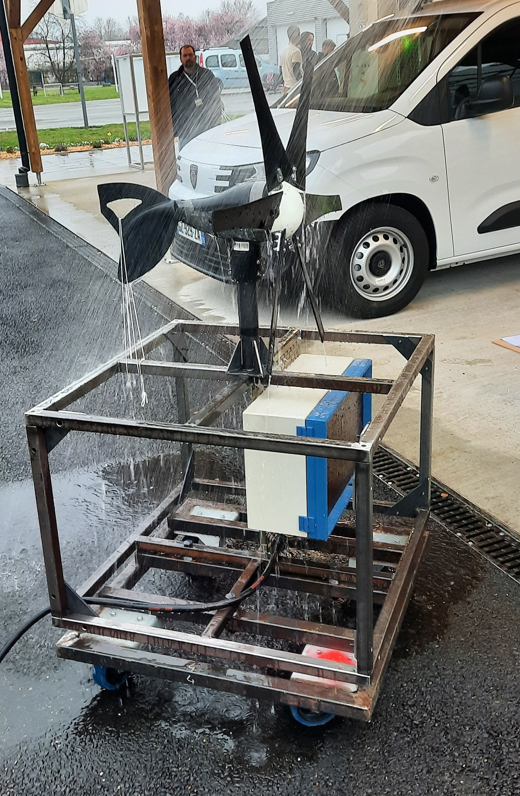

GIM'Éole 2024 - 2025
Résolution de problèmes, optimisation du temps, suivi d'un projet de groupe, Etude du fonctionnement d'une éolienne et optimisation de la production électrique.

Étudiant en BUT Génie Industriel et Maintenance
Étudiant en BUT Génie Industriel et Maintenance dans les Hauts-de-France, je me forme aux enjeux techniques et humains de l'industrie. Curieux, rigoureux et attiré par la résolution de problèmes concrets, je m’investis pleinement dans des projets mêlant automatisme, maintenance préventive et analyse de systèmes. À travers ce portfolio, je souhaite valoriser les compétences que j’ai développées et trouver une opportunité (alternance) pour les mettre en pratique sur le terrain.
Résolution de problèmes, optimisation du temps, suivi d'un projet de groupe, Etude du fonctionnement d'une éolienne et optimisation de la production électrique.
Inventaire des pièces, Rédaction des gammes de montages, Etude de la documentation, Création d'un interface de navigation sur Excel
Utilisation d'Excel pour l'optimisation d'un système. Utilisation de macros Excel pour la mise en forme d'une feuille